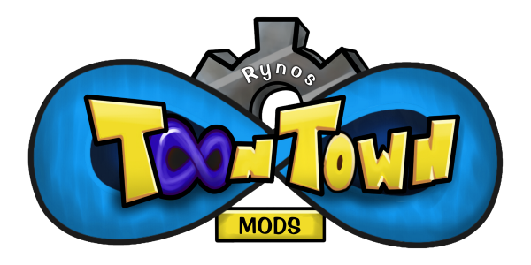

Welcome to the RTTIM Webpage! RTTIM is a bunch of edits of the Toontown Infinite source from 2015. Here you'll find everything about my project that you might want, like downloads.
Release Notes (pre-GitHub)
v69.5 - The Glossy Paint Update
- Most of the current Toontown: Movie Maker Edition branding (title, icon, etc) has been replaced with RTTIM branding!
- Added the TTR Loading Screen. (actually its TTOff but whatever)
- New Pick-A-Toon screen! Now it looks cool.
- New commands:
- ~merits [cogindex] [merits]
- ~summon [shorthand (like tbc)]
- ~leech [hp]
- ~sleep
- Readded some old relics from the original Toontorial.
- Muscular Resources has taken a darker form: Shadow Justice.
- All Tier 9 Cogs can now be fought and have their own special abilities. ~cog spawn [shorthand (like pb)]
- New attacks:
- Flex (Buff Shark)
- Pierce (Pencil Breaker)
- Cigar Smoke (Swag Foreman, The Big Cheese)
- Song and Dance (Pencil Breaker, The Big Cheese, Mr. Hollywood)
- Rental Suits now show up on the Cog when defeated.
- SuitA Cogs now have colored hands!
- The Cog Gallery has been removed because I'm lazy. If you want to use Cog Summons, do the ~summon command.
- Removed the "Promote" button that TTI added to the Disguise Page to prevent Toon issues.
- New SOS Toons:
- Magic Ryno
- Touch Yourself, Terry
- Mr. Cheeze
- Dogemon
- Sir Furball
- Bill
- You can no longer turn into a Cog when you are a Classic Character and vice versa.
- Crocodiles and Riggy can now wear hats (but only in one location).
- You can now customize your game resolution.
- All the music has been changed to TTR's music. Even the D.A's Office.
- The Flower District Reset has been fixed, and the overall event has been visually upgraded.
v69.4
- Added the new TTR colors.
- You can now become Skelecogs and Waiter Cogs. (2-4)
- New Cogs have been added! ~setcogsuit tier [cogindex] 8
- You can now turn into Classic Characters! ~charTrans #
- Added the new TTR Species'. Their current models will change in the future.
- Classic Characters NPCs now exist.
- Flipped the Bossbot suit sleeve and leg textures so it is correct.
- Getting enough people into the flower area will cause the flower to fall down.
v64.3
- Fixed a typo for a SpeedChat phrase and changed another SpeedChat phrase.
- Changed some Make-A-Toon specific text into the 2003 text.
- Removed some more TTMME branding.
- Added Grey and Black Speedchat colors.
- Added an unused Virtual Toon CE from TTI code (16) and a Rayman-inspired CE (17).
- Fixed the invisible CE (11) so naked torsos now go invisible. The original has been moved to 18.
- Added Riggy as a new species.
- Fixed a crash relating to the Tug-O-War Trolley Game.
- OOBE now triggers when pushing F4.
- ~cogIndex was changed to ~setCogIndex.
- You can now become the Cog that you disguise as! ~setCogIndex # 1
- ~loop, ~pingpong, and ~pose are all now server sided! They also work on any Cog suits that you wear!
- untitled's sequence is now shorter.
v64.2
- Smooth Animations work better on Toons.
- 2003 Make A Toon beat the shit out of TTI's Make A Toon and became the only one for RTTIM. The best part is that it works.
- ~setAnimState (animState) (speed #)
- Toons now have to be much further away for lower LOD models to take affect.
- Cogs now use Smooth Animations. (until they die)
- Classic Characters now use Smooth Animations.
- NPC Toons now use Smooth Animations.
- New Colors: ToonFest Blue and Hot Lime.
- Restored original Nude Toon values. (originally ln, mn, sn... restored to l, m, s)
v64.1
- All torsos are now unisex. ~dna torso now utilizes ids 0-8 for all genders.
- Nude Toons are now part of ToonDNA. Do ~dna torso 6-8.
- Because of the above, doing ~setCE 16 will now do nothing.
- All DNA color command restrictions have been removed.
- Some Magic Words like ~name and ~hat have now been changed to their Toontown Offline counterparts. (~setName, ~setHat)
- ~emotes
- Player Toons now use Smooth Animations.
- A strange Toon is now located in Toontown Central. As a consequence, Fisherman Freddy is now stuck in the ground.
- The Title Screen now uses RynoGG branding rather than Ryno Productions.
v1.0.0 - Initial Version
- All features from Toontown: Movie Maker Edition.
- ~cheesyEffect has been changed to ~setCE.
- Nude Toons. Accessed with ~setCE 16.